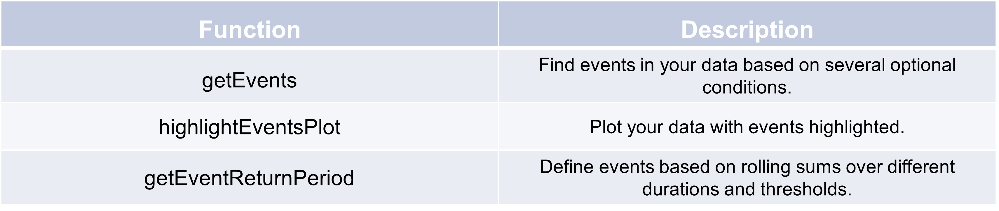

Events#
Get events from time series#
In the following example, a DataFrame is created containing timestamps and values generated from a Poisson distribution,
simulating plausible sensor readings over a 4-hour period starting from April 29, 2000. The value_plaus column is
populated with values drawn from a Poisson distribution with a lambda of 1, resulting in a random yet statistically
consistent dataset. After setting the timestamp as the index, the TSCC.exploration.getEvents function is called to
identify events based on specific criteria, such as peak values and event sums. The resulting event_list captures
significant time intervals where the conditions are met, providing insights into the data’s temporal dynamics.
>>> import pandas as pd
>>> import numpy as np
>>>
>>> # Create a date range for the timestamps
>>> date_range = pd.date_range(start='2000-04-29', periods=50, freq='5min')
>>>
>>> # Generate random data for 'value_plaus'
>>> np.random.seed(0) # For reproducibility
>>> value_plaus = np.random.poisson(lam=1, size=len(date_range)) # Lambda set to 3
>>>
>>> # Create the DataFrame
>>> df = pd.DataFrame({
>>> 'timestamp': date_range,
>>> 'value_plaus': value_plaus
>>>})
>>># Display the first few rows of the DataFrame
>>>print(df.head())
timestamp value_plaus
0 2000-04-29 00:00:00 2
1 2000-04-29 00:05:00 1
2 2000-04-29 00:10:00 1
3 2000-04-29 00:15:00 2
4 2000-04-29 00:20:00 2
>>> df_time = "timestamp"
>>> df_value_raw = "value_plaus"
>>> event_list = TSCC.exploration.getEvents(df.set_index(df_time)[df_value_raw],
>>> max_time_dist_from_center = "45t",
>>> #center_valley = (-float("inf"), float("inf")),
>>> center_peak = (2, float("inf")),
>>> event_sum=(3, 140),
>>> event_dist = (0.000001, float("inf"), .3))
>>> event_list
[[Timestamp('2000-04-29 00:00:00'),
Timestamp('2000-04-29 00:45:00'),
0,
5,
15],
[Timestamp('2000-04-29 00:10:00'),
Timestamp('2000-04-29 01:40:00'),
0,
5,
24],
[Timestamp('2000-04-29 02:15:00'),
Timestamp('2000-04-29 03:45:00'),
0,
3,
13],
[Timestamp('2000-04-29 03:05:00'), Timestamp('2000-04-29 04:05:00'), 0, 2, 9]]
Get (precipitation) event return periods#
This example demonstrates the creation of a DataFrame in Python using the pandas library to represent rainfall data
over various time intervals, ranging from 15 minutes to 72 hours first. Each column corresponds to different accumulation
thresholds (1a, 3a, 5a, etc.), with values indicating rainfall amounts. Following the DataFrame creation, the function
getEventReturnPeriod is invoked to analyze the rainfall data, generating indicators for heavy rainfall events across
specified durations. The resulting DataFrame displays boolean values indicating whether heavy rain was detected for
each time interval.
>>>import pandas as pd
>>>
>>># Define the data
>>>data = {
>>> "1a": [9.7, 12.0, 14.5, 16.1, 17.4, 20.8, 23.0, 27.4, 30.4, 32.6, 38.8, 43.0],
>>> "3a": [13.0, 16.0, 19.4, 21.6, 23.2, 27.8, 30.8, 36.7, 40.6, 43.6, 51.9, 57.5],
>>> "5a": [14.7, 18.0, 21.8, 24.3, 26.2, 31.3, 34.7, 41.3, 45.7, 49.2, 58.5, 64.7],
>>> "10a": [17.0, 20.9, 25.3, 28.2, 30.4, 36.3, 40.3, 48.0, 53.1, 57.1, 67.9, 75.2],
>>> "20a": [19.5, 24.0, 29.0, 32.3, 34.8, 41.5, 46.1, 54.9, 60.7, 65.3, 77.7, 86.0],
>>> "25a": [20.4, 25.0, 30.3, 33.7, 36.3, 43.4, 48.1, 57.3, 63.5, 68.2, 81.2, 89.9],
>>> "30a": [21.1, 25.9, 31.4, 34.9, 37.6, 45.0, 49.8, 59.4, 65.7, 70.7, 84.1, 93.1],
>>> "50a": [23.2, 28.5, 34.5, 38.4, 41.4, 49.4, 54.8, 65.3, 72.3, 77.7, 92.5, 102.4],
>>> "100a": [26.2, 32.2, 39.0, 43.4, 46.7, 55.9, 61.9, 73.7, 81.7, 87.8, 104.5, 115.6]
>>>}
>>>
>>># Define the index (time intervals)
>>>index = ["15 min", "30 min", "60 min", "90 min", "2 h", "4 h", "6 h", "12 h", "18 h", "24 h", "48 h", "72 h"]
>>>
>>># Create the DataFrame
>>>df = pd.DataFrame(data, index=index)
>>>
>>># Display the DataFrame
>>>print(df)
>>>
>>> # Get a DataFrame with heavy rainfall event indicators
>>> df_re = TSCC.exploration.getEventReturnPeriod(df.set_index(df_time)[df_value_raw], KOSTRA_MH)
>>>print(df_re.head())
isHeavyRain_AtLeast1a isHeavyRain_AtLeast3a \
timestamp
2000-04-29 00:00:00 False False
2000-04-29 00:05:00 False False
2000-04-29 00:10:00 False False
2000-04-29 00:15:00 False False
2000-04-29 00:20:00 False False
isHeavyRain_AtLeast5a isHeavyRain_AtLeast10a \
timestamp
2000-04-29 00:00:00 False False
2000-04-29 00:05:00 False False
2000-04-29 00:10:00 False False
2000-04-29 00:15:00 False False
2000-04-29 00:20:00 False False
isHeavyRain_AtLeast20a isHeavyRain_AtLeast25a \
timestamp
2000-04-29 00:00:00 False False
2000-04-29 00:05:00 False False
2000-04-29 00:10:00 False False
2000-04-29 00:15:00 False False
2000-04-29 00:20:00 False False
isHeavyRain_AtLeast30a isHeavyRain_AtLeast50a \
timestamp
2000-04-29 00:00:00 False False
2000-04-29 00:05:00 False False
2000-04-29 00:10:00 False False
2000-04-29 00:15:00 False False
2000-04-29 00:20:00 False False
isHeavyRain_AtLeast100a
timestamp
2000-04-29 00:00:00 False
2000-04-29 00:05:00 False
2000-04-29 00:10:00 False
2000-04-29 00:15:00 False
2000-04-29 00:20:00 False